Introducción a los Data Papers
Estandarización, documentación y publicación de datos de seguimientos de biodiversidad
Taller GBIF.ES - Sevilla
28-30/10/2025
Instituto de Ciencias Forestales ICIFOR-INIA, CSIC
Publicación de Datos
… ¿porqué publicar Datos?
… ¿porqué publicar Datos?
- Necesitamos más información para poder abordar la actual crisis de la biodiversidad
… ¿porqué publicar Datos?
- Existencia de sesgos (temporales, espaciales, taxonómicos) en la información disponible
… ¿porqué publicar Datos?
- Gran parte de los datos no están accesibles imposibilitando su reutilización
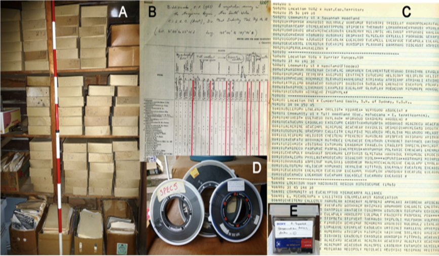
datos En Peligro de Extición
… ¿porqué publicar Datos?
The early bird gets the return: The benefits of publishing your data sooner
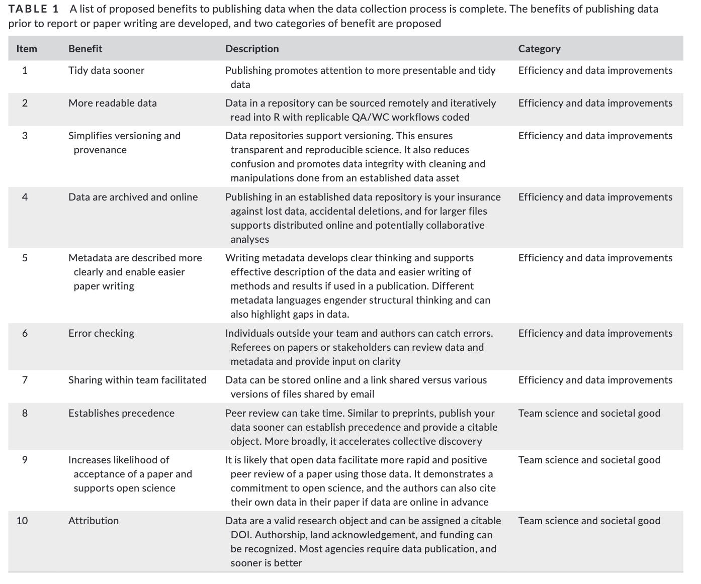… ¿porqué publicar Datos?
Reducción del riesgo de pérdida de los datos
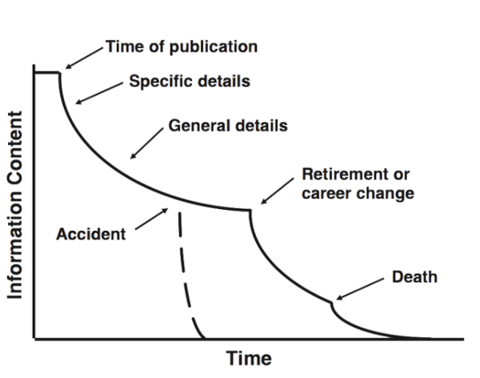… obstáculos para publicar Datos
La mayoría de los investigadores reconocen la importancia de compartir datos (beneficios), aunque señalan diferentes barreras (costes)
Dificultad para la publicación de los datos
Escasez de herramientas sencillas y protocolos para la redacción de los documentos de metadatos
Gran heterogeneidad y diversidad de estándares, herramientas y extensiones de Metadatos
Alto coste y mantenimiento de las infraestructuras necesarias para gestionar la información
Escaso beneficio directo para los proveedores de datos
… Data Paper
Artículo académico que describe un conjunto de datos de biodiversidad y se publica en una revista científica al uso
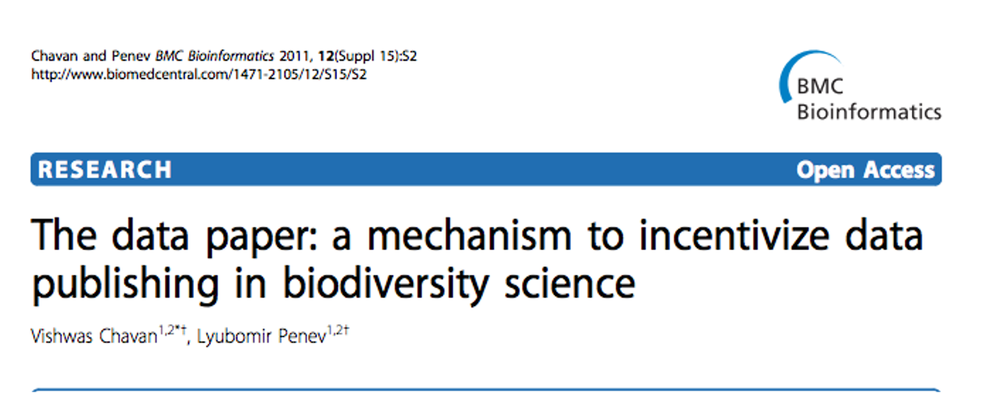
¿Qué es un Data Paper?
Un incentivo: una herramienta para favorecer la inversión de esfuerzos en la publicación de datos de biodiversidad
Una publicación académica que se ajusta a las prácticas académicas estándar sobre un documento que contiene los metadatos de uno o varios datasets accesibles
Un artículo científico cuyo propósito es describir datos más que realizar una investigación
Contiene hechos sobre los datos y no hipótesis ni argumentaciones basadas en los datos, aunque pueden inclur análisis descriptivos
¿Qué es un Data Paper?
Landscape of Open Data in ecology
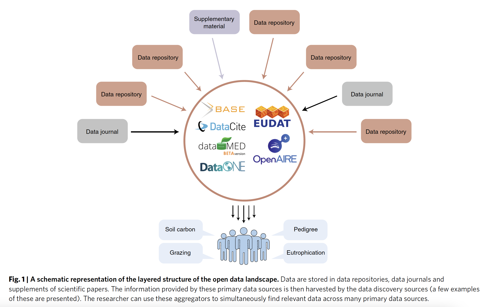dataset, repositorios, data paper …
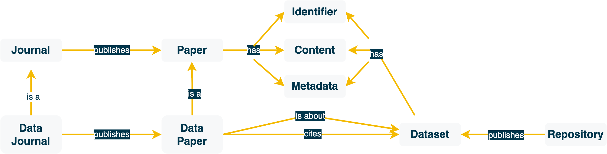
Objetivos de un Data Paper
Proporcionar una publicación científica citable que dé reconocimiento académico (beneficio) a los proveedores de datos
Describir los datos de una forma entendible y estructurada
Facilitar la visibilidad de los datos de biodiversidad entre la comunidad científica
Beneficios de un Data Paper
- Crédito en una publicación académica
- Citación de los datos
- Reconocimiento y construcción de carrera
- Posibilidad de rastrear el uso
- Es una ventana abierta para la colaboración
- Proceso de revisión de los datos
- Más fáciles de descubrir
Beneficios de un Data Paper
- Aumento de la reutilización de los datos
- Aumento de la citación del recurso original
The tragedy of the biodiversity data commons
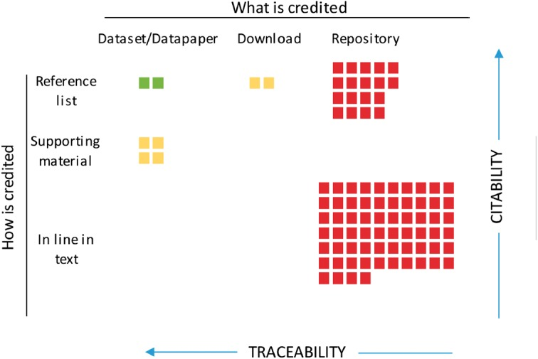Beneficios de un Data Paper
- La revisión del conjunto de datos permite la detección de errores, aumentando la calidad del conjunto de datos
pasos para generar Data Papers
pasos para generar Data Papers
pasos para generar Data Papers
¿Qué tipos de datos incluir?
- En nuestro caso datos de biodiversidad
- Datos ambientales asociados a datos de biodiversidad
pasos para generar Data Papers
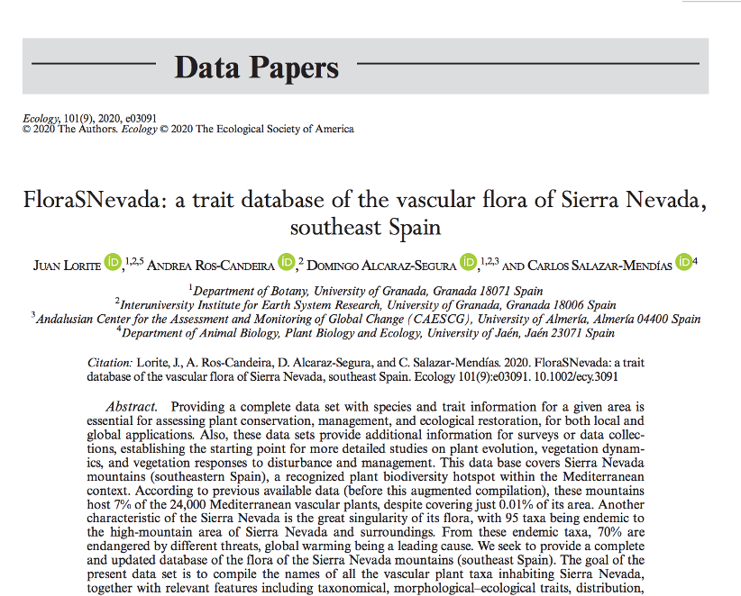pasos para generar Data Papers

pasos para generar Data Papers
¿Cuantos conjuntos de datos incluir en el DP?
- Conjugar intereses autor / publicador / institución / revista
- 1 dataset vs. varios datasets
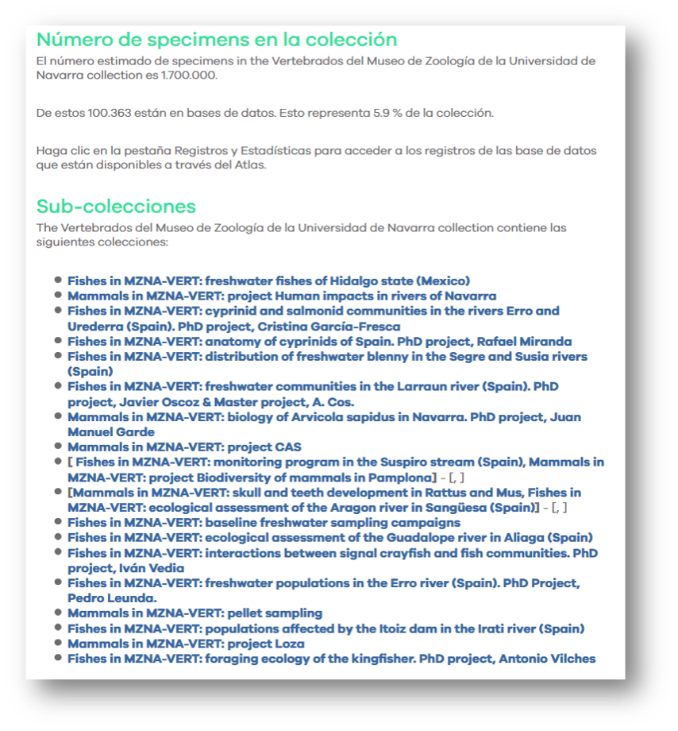
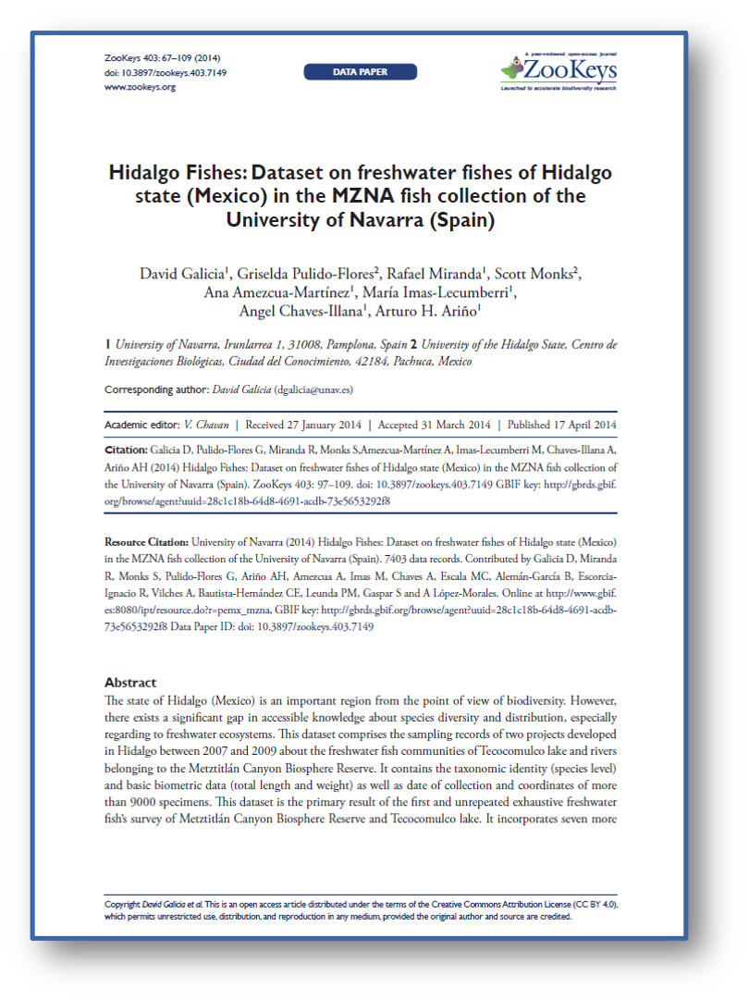
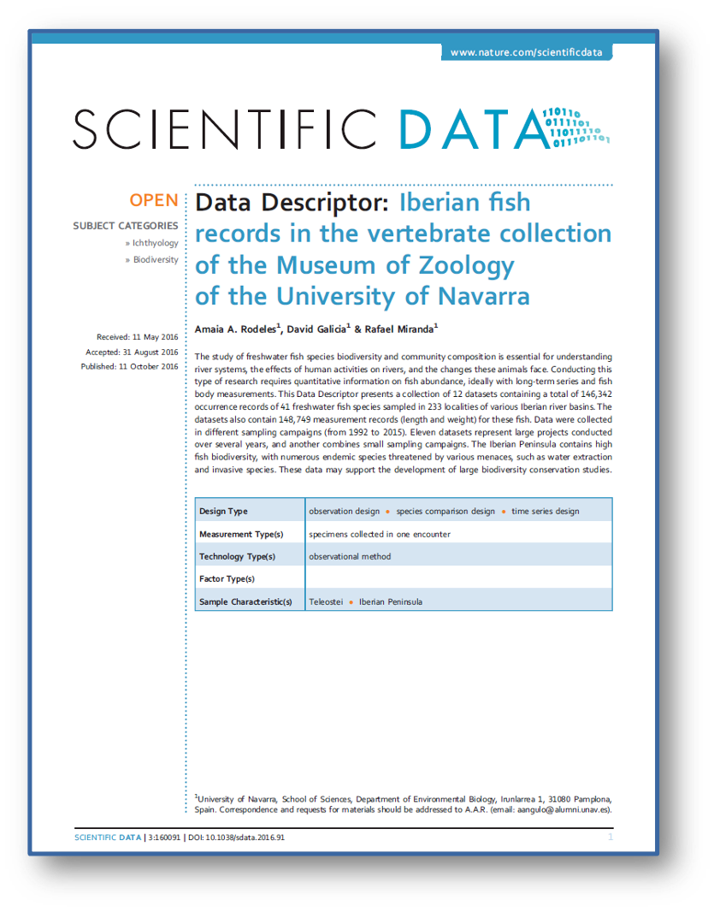
pasos para generar Data Papers
¿Autores?
- Definir responsabilidades
- Los creadores del recurso no tienen porque ser los autores del artículo
- Crédito
- Responsabilidad
pasos para generar Data Papers
¿donde publicar?
- Buscar revistas donde se puedan publicar Artículos de Datos
- Conjugar intereses Autores / Editores
- Disponibilidad de presupuesto
- Factor de Impacto
¿donde publicar Data Papers?
Listados con revistas de Datos:
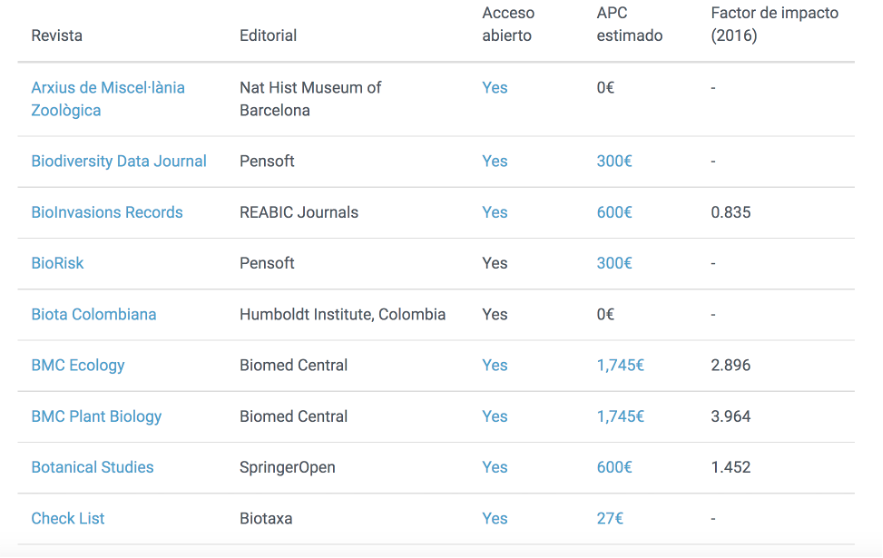¿donde publicar Data Papers?
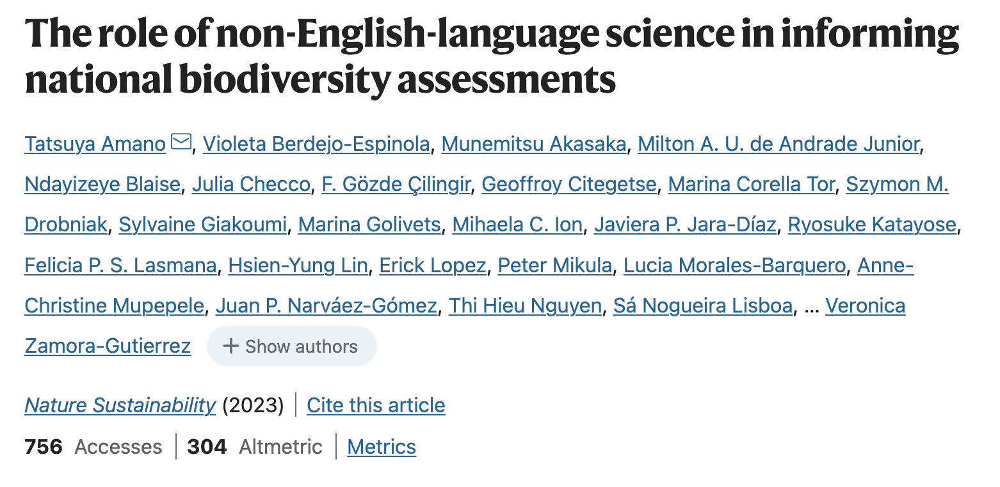
- 65% de las fuentes citadas no eran en lengua inglesa
Biota Colombiana http://revistas.humboldt.org.co/index.php/biota
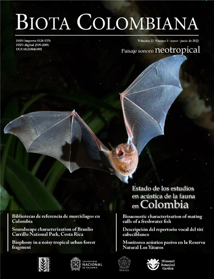
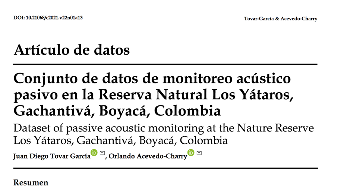
Ecosistemas
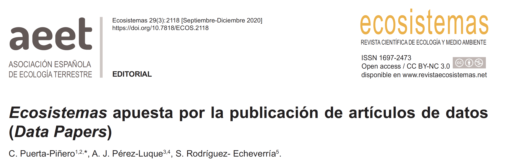- Las revistas que ya publican artículos de datos en castellano generalmente tienen un ámbito geográfico o una tipología de datos restringidos en comparación con el alcance geográfico y tipo de audiencia de Ecosistemas
- 29 envíos (16 rechazados; 3 en revisión)
Ecosistemas
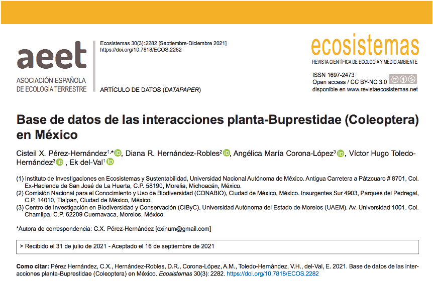Editorial Pensoft
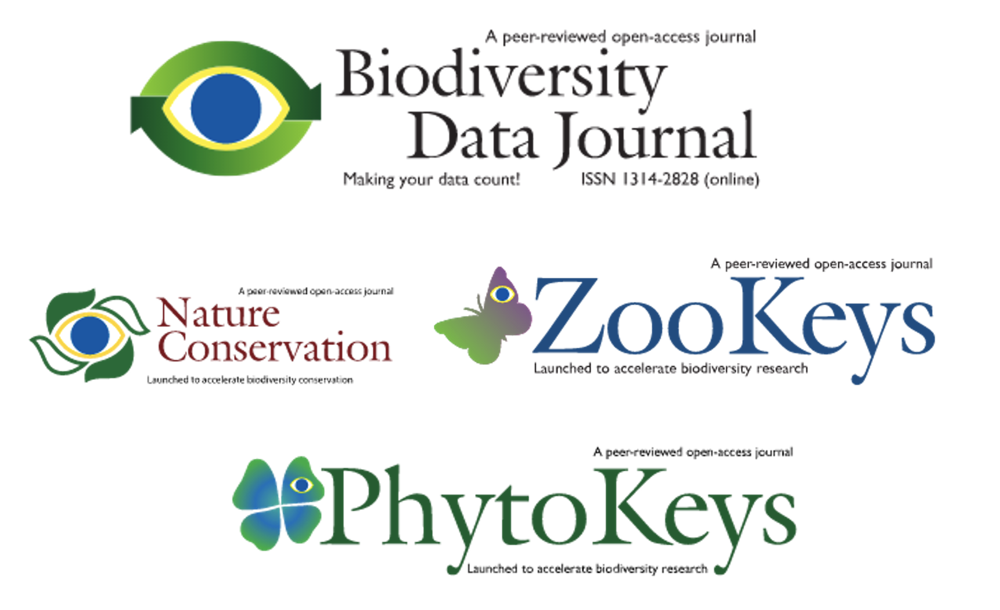Editorial Pensoft
Arpha Writing Tool https://arpha.pensoft.net/

Muchas Gracias
Ayuda JDC2022-050056-I financiada por MCIN/AEI /10.13039/501100011033 y por la Unión Europea NextGenerationEU/PRTR